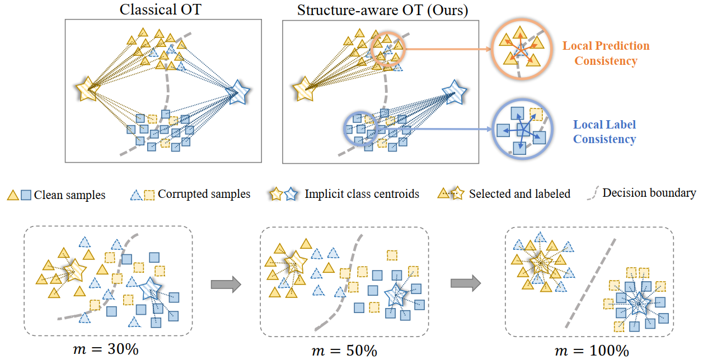

|
Wanxing Chang (常琬星) I'm a final-year master student in Computer Science at ShanghaiTech University. Previously, I received my B.S. in Biomedical Engineering at University of Electronic Science and Technology of China (UESTC). I am interested in Open-World Learning and Optimal Transport. Email / Google Scholar / GitHub / 知乎 |
Research |
|

|
CSOT: Curriculum and Structure-Aware Optimal Transport for Learning with Noisy Labels
Wanxing Chang, Ye Shi, Jingya Wang NeurIPS 2023 project page / paper / code |

|
Unified Optimal Transport Framework for Universal Domain Adaptation
Wanxing Chang, Ye Shi, Hoang Duong Tuan, Jingya Wang NeurIPS 2022 Spotlight (Top 5%) project page / paper / code / video / VALSE |
|
I stole this website template from Jon Barron. Big thanks! |